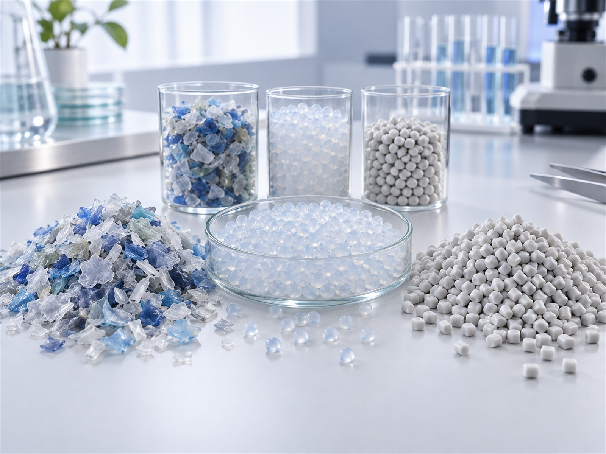

NEXORA
기후변화 대응
2030년까지 온실가스를 2020년보다 40% 줄이는 게 목표입니다.
- 온실가스 인벤토리
- 감축 투자
- 기후 리스크
공장마다 온실가스·폐수·폐기물 배출량을 달마다 재고, 해마다 감축 목표와 실적을 공개합니다.
2030년까지 온실가스를 2020년보다 40% 줄이는 게 목표입니다.

공장 지붕에 태양광을 달고, 전력 20%를 재생에너지로 삽니다.

공정에서 나온 자투리 섬유는 모아서 원료로 씁니다.

대기·수질 배출 기준을 법정 기준의 절반으로 잡아 관리합니다.

공장 주변 하천을 해마다 조사하고, 인근 주민과 함께 정화 활동을 합니다.

제품마다 원료부터 폐기까지 탄소 배출량을 셉니다.

협력사 30곳과 에너지 절감 과제를 같이 하고 비용을 댑니다.